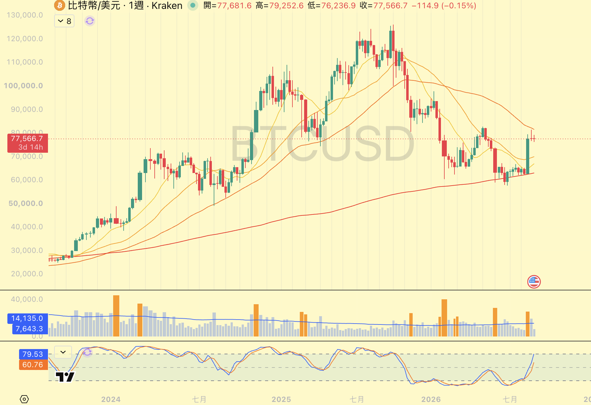

便宜有兩種
貴也有兩種。我怎麼分好的那一種跟壞的那一種 ｜ 整理日期：2026 年 9 月 12 日
先講一件我以前做錯的事｜我只敢買跌下來的。愈跌愈買，覺得便宜就是機會，至少它會漲回原本那個價，我至少賺到那一段。我用這個邏輯買了八年，一支都沒賺到。後來我才發現，問題不在便宜還是貴，在我根本分不出來是哪一種便宜、哪一種貴。
| 長什麼樣子 | 我會做什麼 | |
|---|---|---|
| 好的便宜 | 價格在相對低檔，但量進來了 | 分批撿 |
| 壞的便宜 | 價格在相對低檔，而且沒有量 | 不碰。便宜還會更便宜 |
| 好的貴 | 才剛起漲，一兩天到一兩週 | 可以進，這不叫追高 |
| 壞的貴 | 已經漲一段時間了 | 不碰。這才叫追高 |
說明：這四種是我自己在用的分法，不是市場公認的名詞。分辨便宜的好壞看的是「有沒有量」，分辨貴的好壞看的是「漲多久了」，兩把尺不一樣，下面分開講。
本頁為個人研究整理，不構成投資建議；最後一段「這套分法的代價」請務必一併看完。
01
好的便宜：在跌，但有人在接
GOOD CHEAP
可以分批撿
一句話｜便宜不是重點，有沒有人陪你一起買才是重點。
我在找什麼
- 價格在相對低檔。用均線或 KD 判斷，現在的價格明顯低於這段時間買進的人的平均成本。
- 而且量進來了。低檔橫盤的那段出現特別高的量柱，代表有一批新的錢願意在這個位置接手。那是換手，不是下跌。
- 這種我抱得住。因為我知道我跟有眼光的人站在一起。就算它買完之後在那邊橫盤，甚至短暫跌破我的成本，我也不會慌著出場。
怎麼買
- 有量但還沒突破盤整區間，就分批進。我不會一次打完，因為我不知道它還要橫多久。
- 突破了盤整區間，剩下的一次打進去。這時候不用再分批了。
- 分幾批看我在做長線還是短線。長線佈局分一到兩季，短線兩週到一個月。分批進場怎麼分那頁有完整的算法。
補充｜「有量」要看連續，不是看單週。單獨一週爆量配一根長紅，資訊還不夠。我要的是連兩週以上，或者是帶著量但價格橫著走那種——那才是真的在換手。
02
壞的便宜：在跌，而且沒人接
BAD CHEAP
我不碰
一句話｜便宜還會更便宜。沒有量的低檔，我沒有辦法判斷底在哪裡。
為什麼沒量的便宜不能碰
- 沒有量，代表沒有人在接。價格會跌只要沒人買就夠了。你看到一根很便宜的價格，可能只是賣壓還沒出完。
- 它可能一年後才漲。而那一年很磨人。最磨的不是它不動，是那一年隔壁一直在噴，你手上這支動都不動，然後你就會開始換方法。
- 你抱不住。沒量的時候你沒有任何依據，只能靠信心撐，而信心會被價格慢慢磨掉。
我自己踩過最痛的一次
- 那次是 Meta。它從三百跌到兩百，我看 KD 已經在低檔就進去了。但低檔還可以更低，我遇到的就是這個。
- 我還開了槓桿。原本的計畫很清楚：碰到清算價就入金攤平。結果它真的碰到的時候，我沒有照計畫做，我跑去問別人，別人叫我砍，我就砍了。
- 我砍在最低點，後來它一路漲到六百。最痛的不是虧那筆錢，是我後來發現我砍掉的理由不是害怕，是我看不懂，所以我覺得很煩。
- 那次教會我兩件事。一是低檔要配著量看，二是沒有十足的把握就不要開槓桿——光是抱現貨都會煩了。
風險提醒｜「沒量的便宜」不等於「一定不會漲」。它只代表我看不懂，所以我不做。有些標的真的可以無量磨很久然後翻上去，那種行情不在我的守備範圍，我就讓它走掉。
03
好的貴：才剛起漲
GOOD EXPENSIVE
這不叫追高
一句話｜同一個標的、同一個題材，在起漲點買跟在右上角買，是完全不同的兩筆交易。
我怎麼判斷「剛起漲」
- 前面有一段橫著走的盤整。價格上上下下但沒有明顯方向，走了一陣子，然後帶著量往上突破。盤整那段就是換手的過程。
- 離盤整區的上緣不遠。剛突破、還在附近，那就是早。已經離開一大段、中間完全沒有回檔，那就是晚了。
- 時間大概是一兩天到一兩週。不是精確的規則，是一個量級的概念。
- 重點不是「便宜」，是「早」。這兩個不一樣。跌八成的東西很便宜，但它可能還在下坡；剛突破的東西不便宜，可是它在上坡的起點。
我是怎麼改過來的
- 玩《大富翁 4》的時候想通的。那個遊戲裡有一個股市，我一開始照現實的習慣挑便宜的買，結果跟現實一樣，怎麼玩怎麼輸。
- 我很不爽，就決定跟自己對做。改成只買紅字的、只買正在漲的，把錢平均分成五份，哪一支翻綠就賣掉，賣掉的錢再分回剩下的。
- 規則就這麼簡單，但我後來永遠第一名。那天我才發現，現實世界的規則好像也是這樣。
04
壞的貴：已經漲一段時間了
BAD EXPENSIVE
這才叫追高
一句話｜你買的是別人的獲利了結對手單。
長什麼樣子
- 已經離開起漲點一大段。中間幾乎沒有像樣的回檔，一路衝上來。
- 價格在高檔開始橫著走，而且量在縮。想買的人買得差不多了，推它上來的錢在退場。這時候進去，你接的是別人要出的貨。
- 高檔爆量長黑更要小心。那不是有人在搶進，是有人在大量賣給你。低檔爆量比較像進場，高檔爆量比較像離場，同一個訊號在不同位置意思完全相反。

這張圖上四種都有
- 2024 那一整片是好的貴。價格一路往上，下面的量柱一根接一根站在均量線上面。有量的上漲，中間任何一次回檔後的突破都是可以進的位置。
- 2025 年七月之後是壞的貴。價格在十一萬到十二萬五之間做了雙頭、橫了好幾個月，可是量柱明顯縮下去。價格還在高檔，錢已經在退。然後 2026 就跌破了，一路掉到六萬附近。
- 2026 上半年那段下坡就是壞的便宜。愈來愈便宜，但量一直起不來。那段路上每一次「看起來夠便宜了」，後面都還有更便宜。
- 最右邊那根量拉起來了，但只有一週。所以我到現在還是只有現貨，沒開槓桿。我在等的是連兩週，或者帶量但價格橫著走的那種。
05
這套分法的代價
TRADE-OFF
先看完再用
- 你會錯過一堆行情。條件沒到就是不進，而條件常常不到。無量噴上去的那些我全部拿不到。
- 「剛起漲」是事後才看得出來的。當下你只知道它突破了，不知道這是真突破還是假突破。所以短線我進場的同時就會設好停損，被打到就走。
- 好的便宜會讓你等很久。低檔有量不代表它明天就漲，可能還要橫好幾個月。
- 這四種分法只適用追勢型的短線與波段。長期存股是另一套，兩種混著用我吃過虧。
這一頁決定「買哪一種」。判斷有沒有量、要不要開始買，在 追高之前先看量；開始之後怎麼分批買，在 分批進場怎麼分；什麼時候該走，在 賣掉之後它才漲。四頁是同一套系統的四段。